Ayurveda Wellness Retreat
Doctor-guided Ayurveda treatments by the sea, with yoga, herbal meals and slow days.
View detailsEvery itinerary is a starting point. Change dates, hotels or pace and we will price it again.
Pick the side of the island that pulls you. Every journey can be mixed and reshaped.
Doctor-guided Ayurveda treatments by the sea, with yoga, herbal meals and slow days.
View details
Wetlands, rainforest and hill country with a guide who knows where the endemics hide.
View details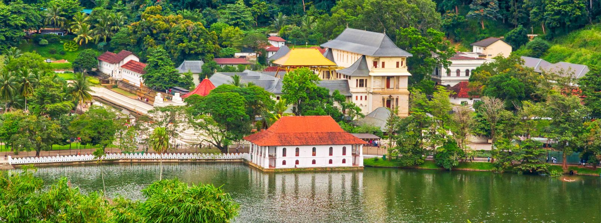
The classic loop: rock fortress, sacred Kandy, tea country and the south coast.
View details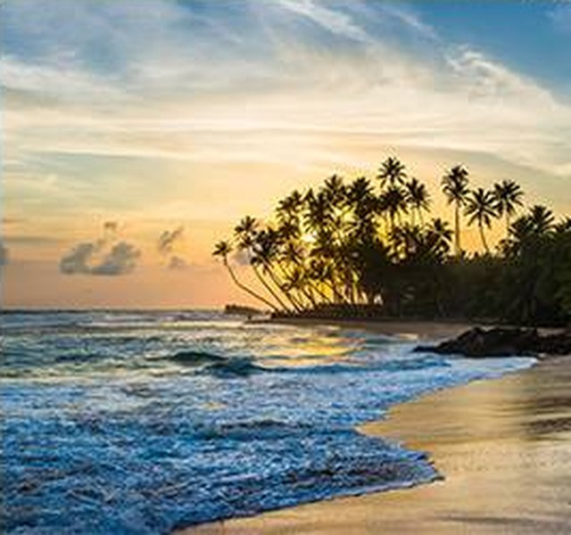
Quiet beaches, coral snorkelling and harbour towns on the sunrise side of the island.
View details
Rainforest walks, elephant country and village life, kept low-impact.
View details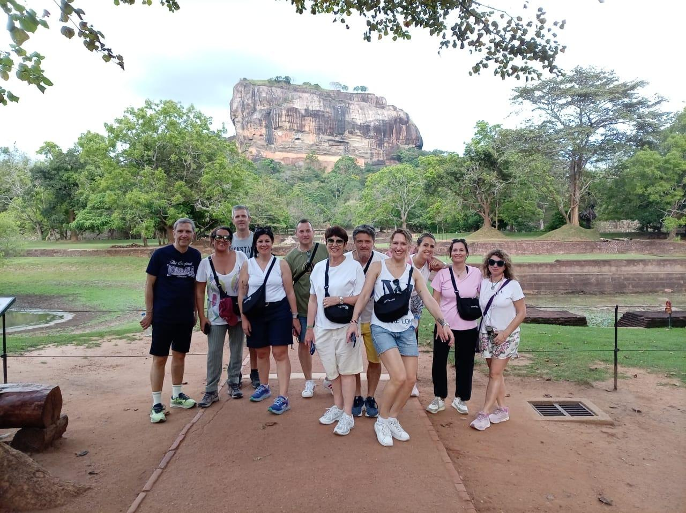
Our longest all-round tour: ancient cities, hills, wildlife and beach.
View details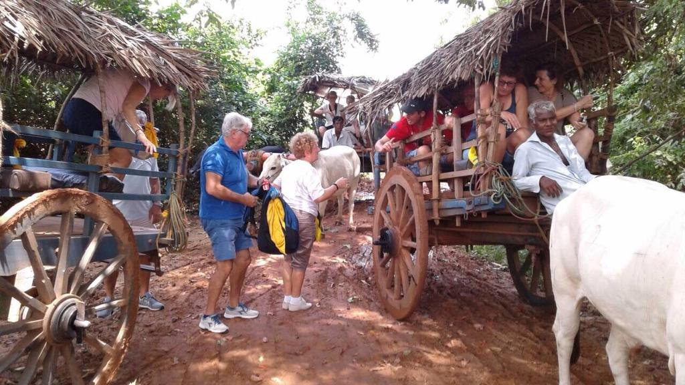
Spice gardens, paddy fields and tea estates, hands-on and close to the land.
View details
Mountain walks with temple stops, from Ella's ridges to World's End.
View details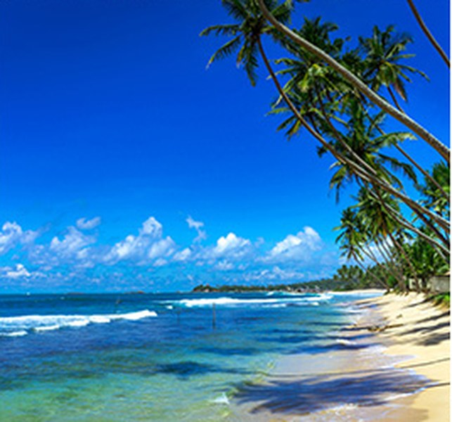
A short seasonal escape that mixes culture with the best beach weather.
View details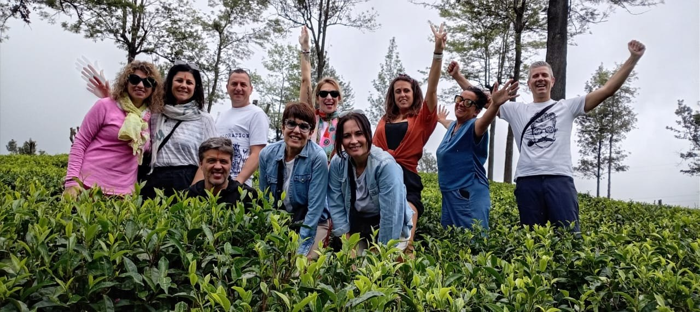
Longer walks through hill country, forest and tea trails with a trained guide.
View details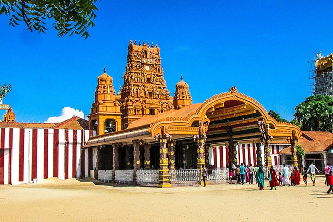
Jaffna, island crossings and quiet towns that most visitors never reach.
View details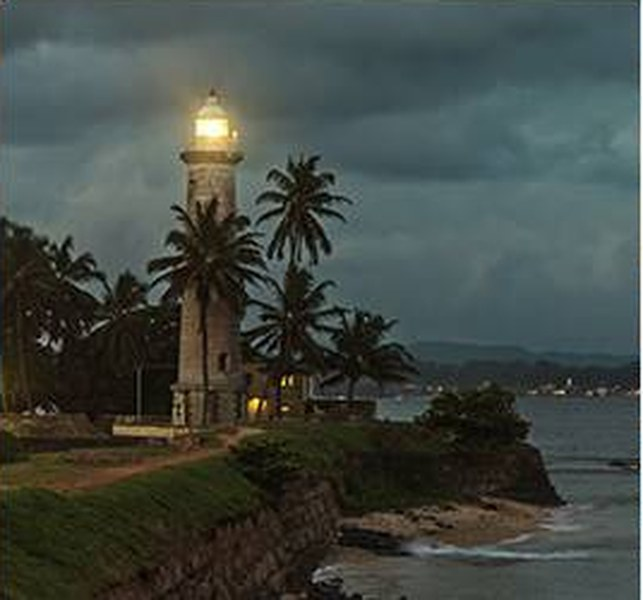
A tight cultural loop for short stays.
View details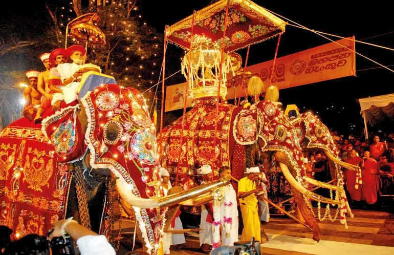
Sri Lanka's ancient capitals, one after another, with time to take them in.
View details
Boutique villas, private drivers and unhurried days, planned around you.
View details
Pilgrim and heritage churches from Negombo to Madhu.
View details
Follow the Ramayana through places Sri Lankans link to the epic.
View details
Beach, tea country views and a couples' spa day.
View details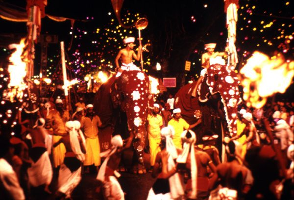
Plan your visit around a festival or a sporting fixture and we handle the rest.
View details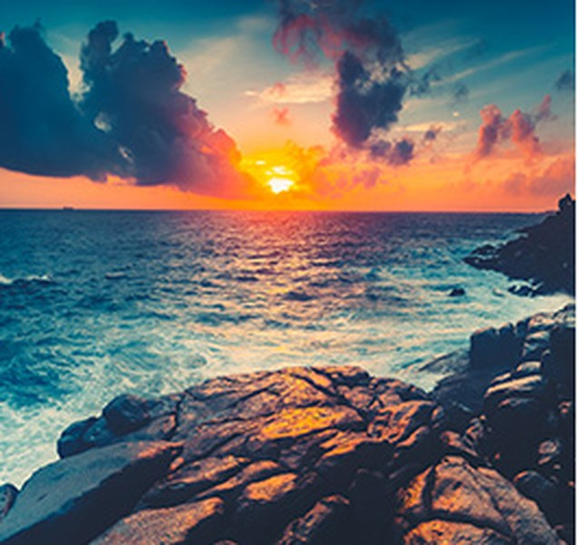
See hatchlings and learn how the coast's conservation projects work.
View details
Mirissa boat trips in the whale season, with the south coast around it.
View detailsEvery trip is tailor-made, so the rate depends on your dates, hotels and group size. Send a booking request and our team will email you the rate and full details.
Sri Lanka's own system of medicine, practised by resident doctors. Stay by the sea, follow a plan made for you, and let the days slow down.
Tell us your dates, group size and interests. We reply within one working day, and no payment is needed to send a request.